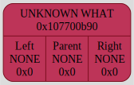

MEGA DUMP
Colors meanings:variable node⮑ left subtree edgenumber node⮑ right subtree edgeoperation node⮑ unknown what edgepointed nodeunknown what nodeNameTable:Binary Tree[0x16ba0f220] born at "/Users/anatolij/Documents/GitHub/Differentiator/source/main.cpp": 14, name 'tree'
Number Variable Value Status State 0 x 0 VAR_STATUS_DISUSING VAR_DIFF_STATUS_NUM 1 y 0 VAR_STATUS_DISUSING VAR_DIFF_STATUS_NUM 2 z 0 VAR_STATUS_DISUSING VAR_DIFF_STATUS_NUM
Number Operation LaTexSymbol 0 + + 1 - - 2 * \cdot 3 / frac 4 sin \sin 5 cos \cos 6 sqrt \sqrt[] 7 ^ ^ 8 log log_ 9 ln \ln 10 exp e^ DUMP #1: function ExpressionReader was called from /Users/anatolij/Documents/GitHub/Differentiator/source/Differentiator_reader.cpp: 141 